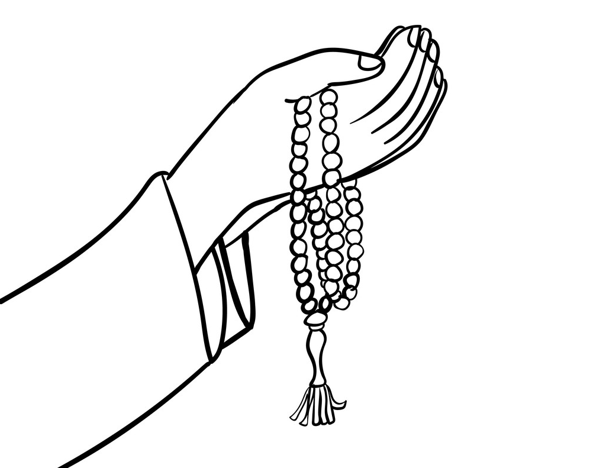
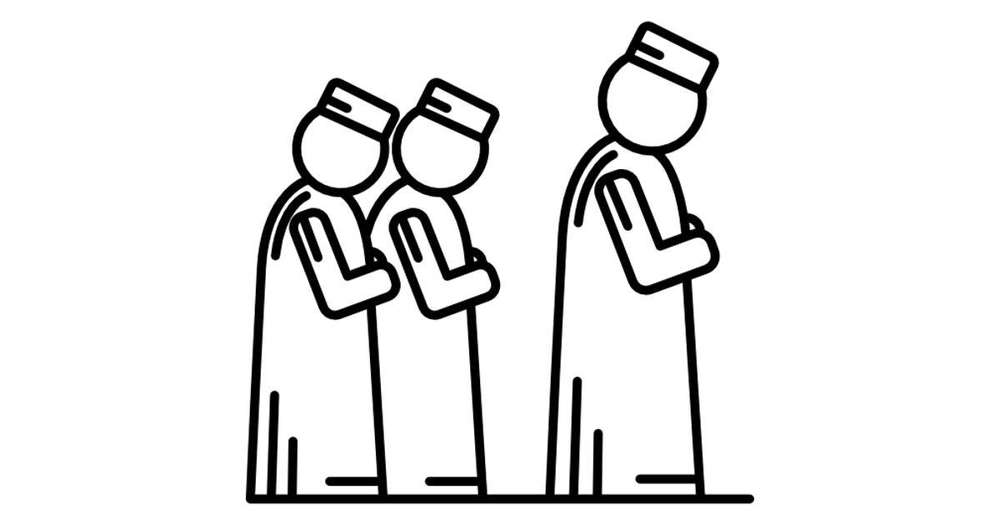

Topic 10 : pg 106-114 | Reading duration: approx. 10 mins
Lesson 1: Sunnah practices during and after prayers
Learn about the various sunnah practices for prayers to further enhance and improve the quality of your ibaadah.
Start learning Test yourself

Topic 13 : pg 130-138 | Reading duration: approx. 10 mins
Lesson 2: Jemaah prayers and Friday prayers
Learn how to pray jemaah and Friday prayers and their significance in Islam.

Topic 14 : 139-149 | Reading duration: approx. 10 mins
Lesson 3: Solat for travellers and the sick
Prayer is still obligatory for every Muslim, regardless where they are. In this lesson, you will learn how to perform prayers when you are travelling as well as the steps which must be taken during prayers for Muslims who fall sick.
Start learning Test yourself